ASOS · Printer-less Returns
Reducing friction in the returns journey with QR codes
- Role
- Sole UX/UI designer
- Timeline
- Apr – Oct 2019
- Disciplines
- UX, UI, prototyping, cross-platform design, email design

- Problem
- Every ASOS parcel included a paper returns form, around 64 million a year. They were easy to lose or fill in wrongly, and wasteful.
- My role
- Sole UX/UI designer, turning the paper form into a digital returns flow across web, iOS, Android and email.
- Key insight
- Creating the return was the easy part. Customers needed to know exactly what to do next, so I tested several versions of the instructions until there was no confusion.
- Outcome
- Launched on iOS and Android in October 2019, with web following a month later.
Problem
To return items, ASOS customers filled in a paper form listing what they were sending back and why. Forms were misplaced or filled in wrongly, and printing them had a real economic and environmental cost: one in every parcel, around 64 million a year.
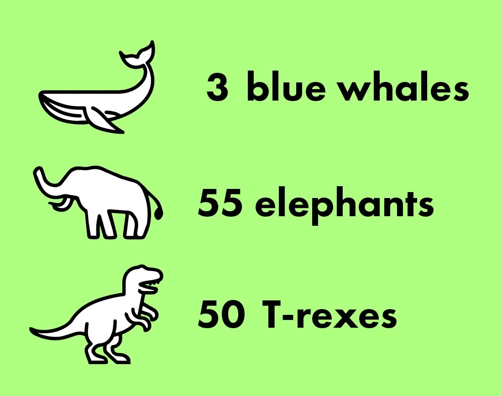
The goal was to move returns online. UK customers would create a return in My Account and get a barcode or QR code to show at their chosen carrier drop-off point.
My role
I was the sole UX/UI designer on the project, responsible for translating the paper form into a digital experience across web, iOS and Android, and the confirmation email.
Process
From paper form to digital flow
I kept the mental model of the paper form: ticking an item became a checkbox, and the reason code became a dropdown with options like "Doesn't fit properly" or "Incorrect item received". Customers then entered their postcode to choose a drop-off point, with distance and opening hours shown to help them pick.
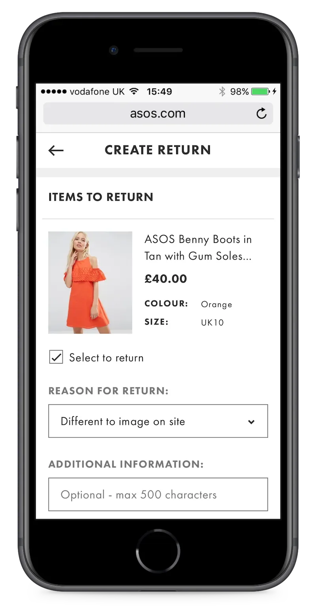
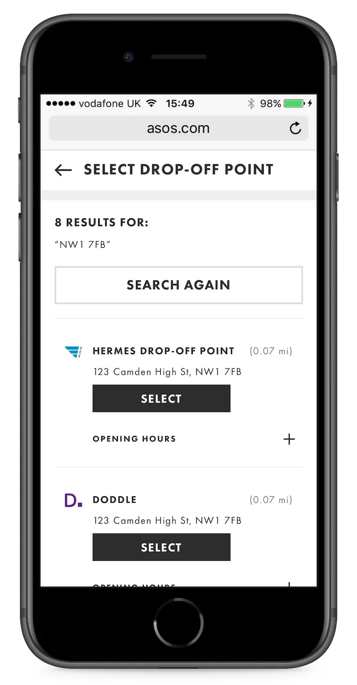
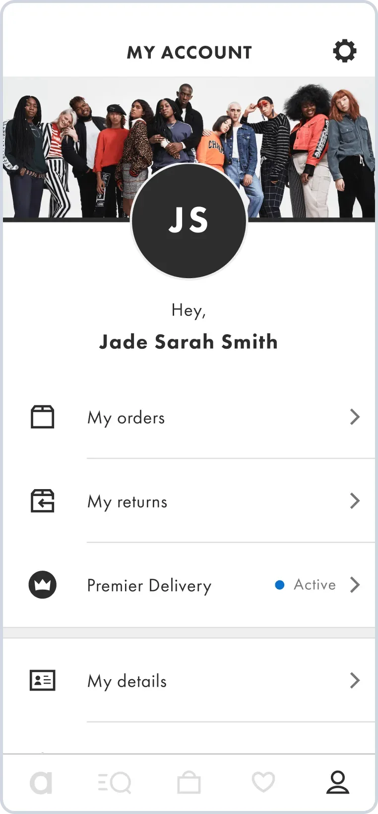
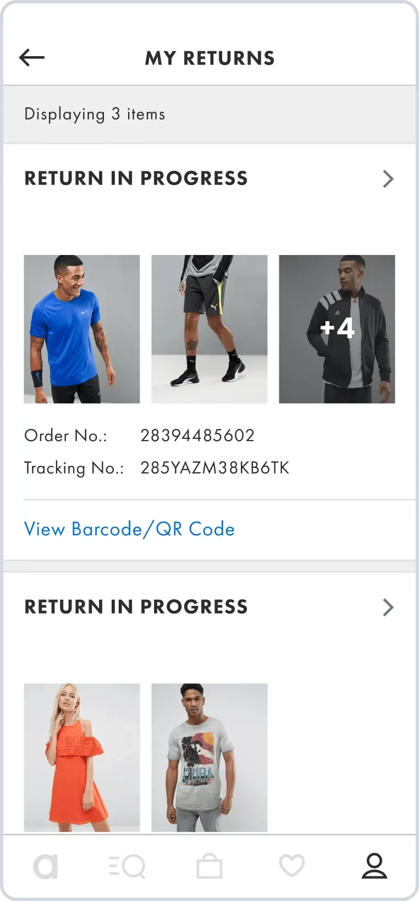
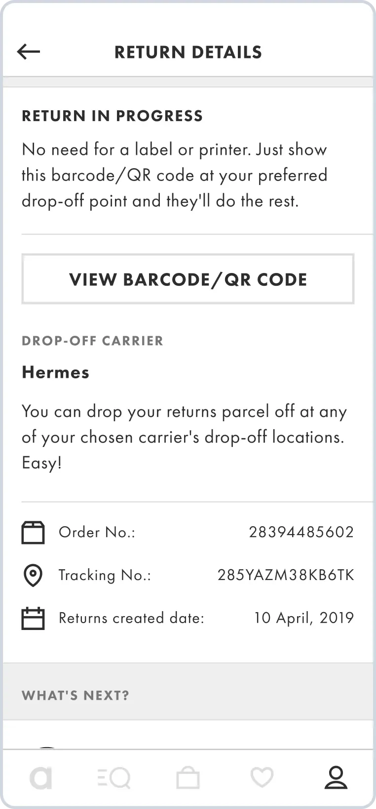
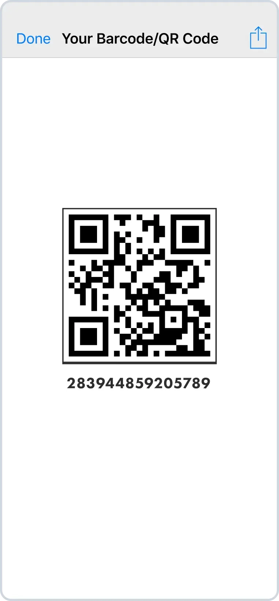
Telling customers what to do next
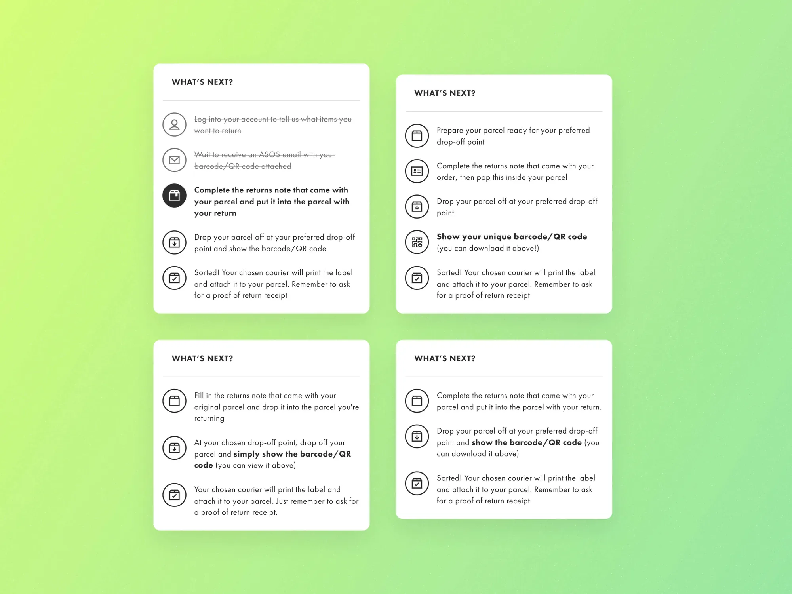
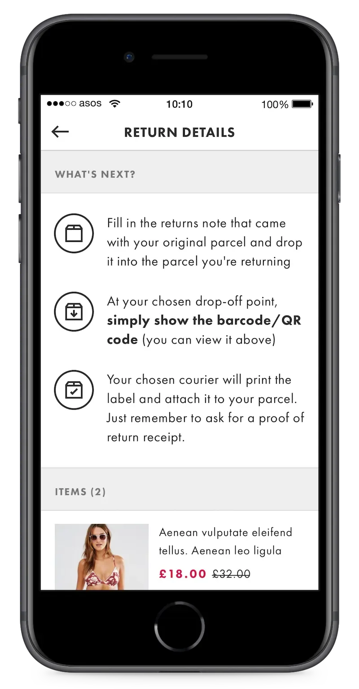
Designing for edge cases and accessibility
Sometimes the code wasn't generated straight away, so I designed a transient message asking customers to try again shortly. Even for errors outside our control, it was important to be transparent.
On iOS, the return details screen supported Dynamic Type. I showed how the layout behaved with larger text, scaling the copy while keeping decorative icons the same size. Accessibility was a core principle from the start.
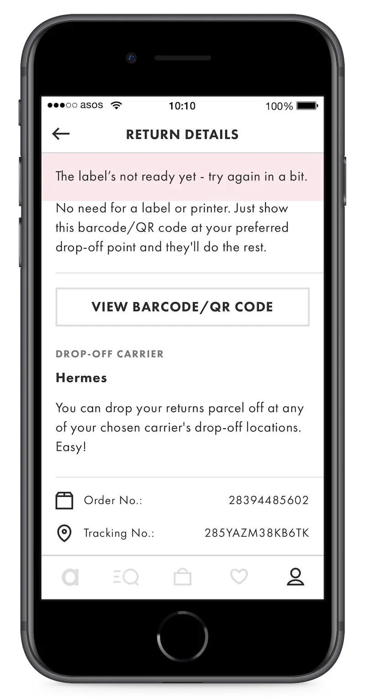
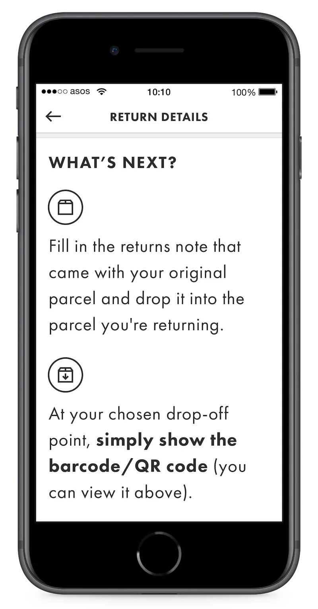
Across every platform, and email
To reach all customers, the flow was designed for web, iOS and Android, following each platform's guidelines, including Android's dark theme. The confirmation email carried the same instructions and the code, giving customers a second route if the app or site wasn't available to them.
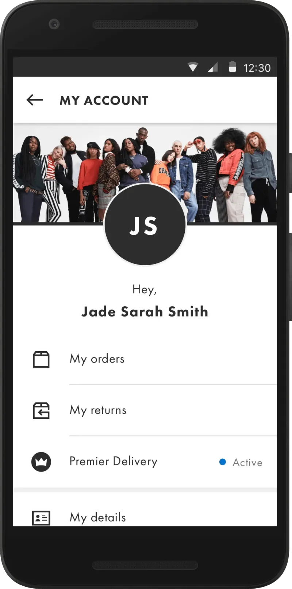
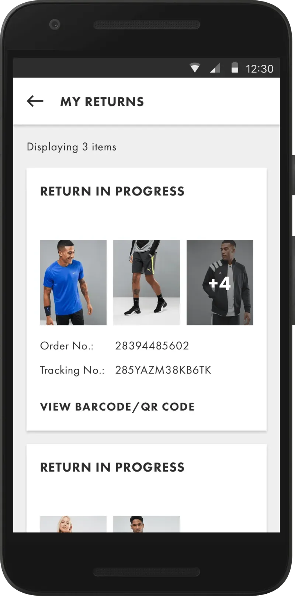
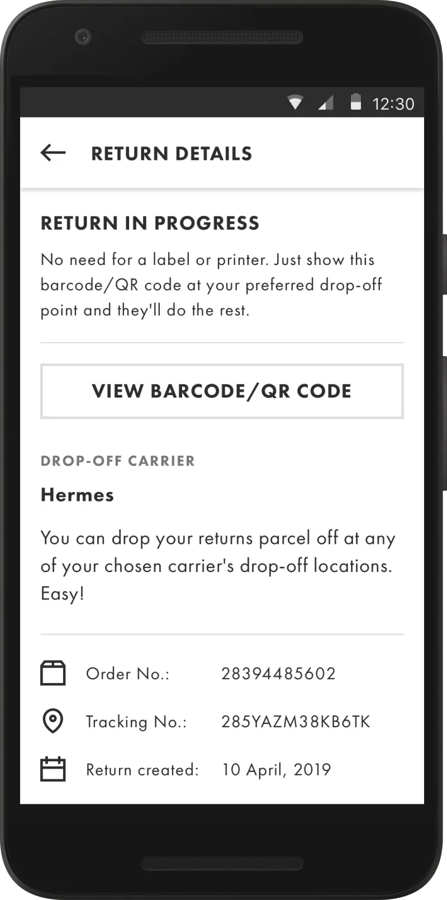
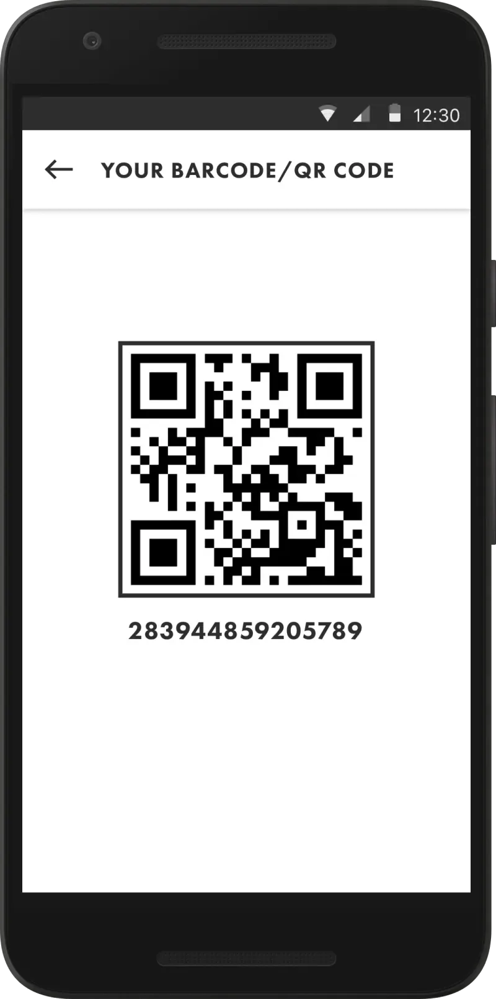
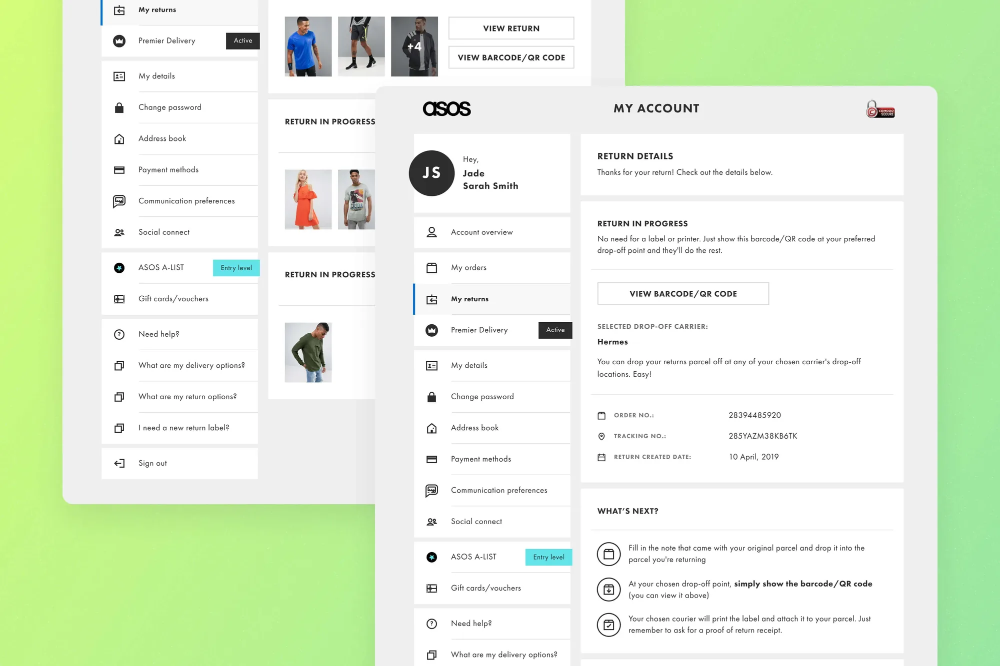
Outcome
Printer-less returns launched on iOS and Android in October 2019, with web following a month later, giving UK customers a way to return items without printing anything.
Next case study
ASOS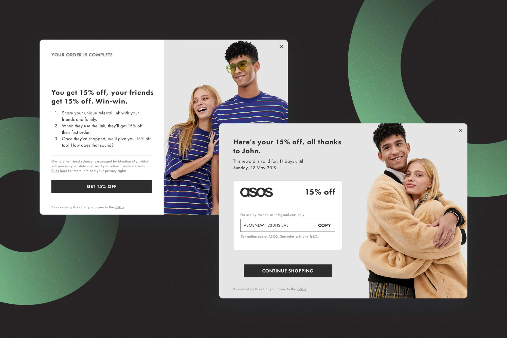